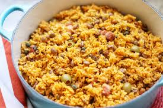

Arroz Con Gandules

Shown: Arroz con Gandules
Arroz con Gandules is a Puerto Rican meal consisting of rice, pigeon peas, and a variety of seasonings and other flavors from different vegetables. This meal is most commonly served alongside fried plaintains, known as "tostones", as well as a portion of meat of your choosing. This meal is best enjoyed with the coldest beer money can buy.
Ingredients
- 2 green bell peppers (diced)
- 1 onion (chopped)
- 6 cloves of garlic (minced)
- 1 bunch of cliantro (finely chopped)
- 3 tablespoons of olive oil
- 15 ounces of tomato sauce
- 1 0.25 oz package of Spanish seasoning
- 3 cups of uncooked brown rice
- 2 15 oz cans of pigeon peas (drained)
- 6 cups of boiling water
Home